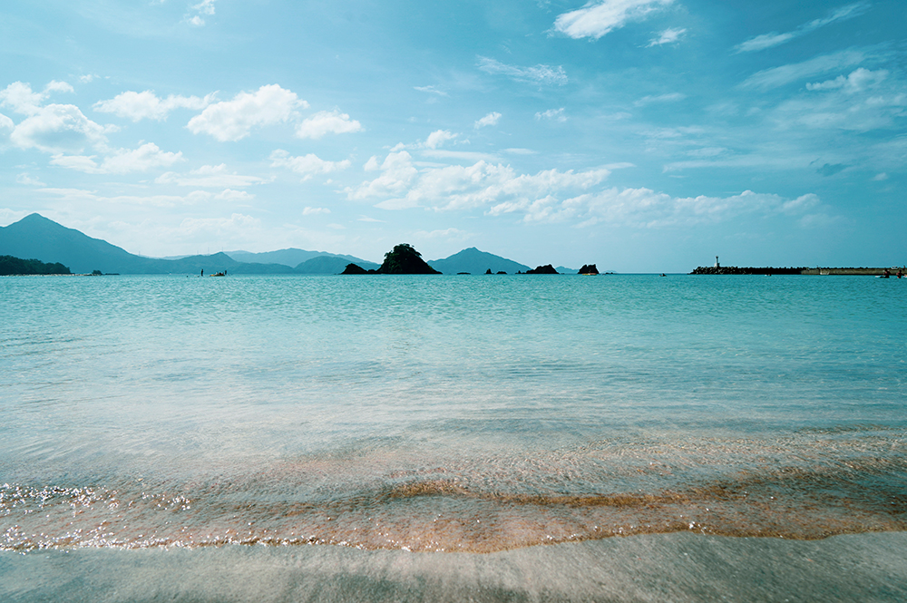

海と共に生きる町
ブンタウは、海とともに息づく町です。朝日が昇ると同時に漁師たちは小舟で海へと出かけ、夕方には笑顔で港に戻ってきます。彼らの生活は海そのものに支えられており、自然と共生する知恵が日常に溶け込んでいます。町を歩けば、道端で魚を干すおばあさんや、漁から戻った家族を迎える子どもたちの姿が見られます。観光客にも親しみやすく、困っている人を見かけたらすぐに助けてくれる温かい心がこの町の誇りです。ブンタウの人々の笑顔は、まるで南国の太陽のようにやさしく輝いています。